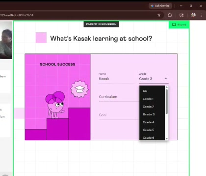
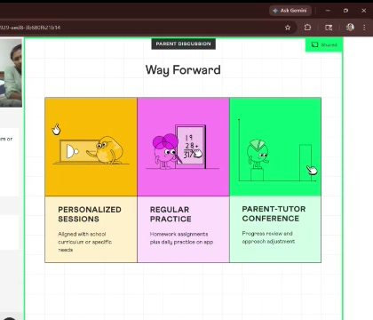

Why This Module Exists
We have analysed past trials across Australia, and found that in trials that did not convert into an enrolment, there were a significant number of objections from parents attending the trial class. If these objections were handled effectively, we believe there would be a meaningful jump in conversions.
This is critical — during the trial, the parent is actively making a decision. Every objection that goes unaddressed or is deflected can turn into a rejection.
This module gives you a clear framework on how to handle every type of objection that comes your way. It takes about 30 minutes to complete.
Grade to Year Mapping
| What We Say (India) | What They Say (Australia) | Age |
|---|---|---|
| Kindergarten / LKG-UKG | Foundation / Prep / Kindy | 4-5 |
| Grade 1-6 | Year 1-6 (Primary School) | 6-11 |
| Grade 7-10 | Year 7-10 (High School) | 12-15 |
| Grade 11-12 | Year 11-12 (Senior Secondary) | 16-17 |
States & Cities You'll Encounter
| State | City | Key Context |
|---|---|---|
| NSW | Sydney | Largest market. OC Test + Selective School entry — very competitive. |
| VIC | Melbourne | Second largest. Scholarship exams (ACER, Edutest) for private schools. |
| QLD | Brisbane, Gold Coast | Growing market. Academic excellence programs. |
| WA | Perth | GATE (Gifted and Talented) testing. Parents often mention curriculum feels "behind." |
| SA | Adelaide | Smaller but engaged parent base. |
Key Cultural Points
- The Indian diaspora is our largest segment. Many are first-generation immigrants who highly value education.
- Australian parents are respectful but direct. They appreciate honesty about their child's level.
- The school year runs February to December (4 terms), not April to March.
- Australia has 3 time zones. Sydney/Melbourne (AEST) vs Perth (AWST) is a 2-3 hour difference.
OC Test (Opportunity Class) — NSW
- Entry test for Year 5-6 Opportunity Classes in NSW government schools. These are advanced classes for academically gifted students.
- Students sit the test in Year 4 (for Year 5 entry). It tests reading, mathematical reasoning, and thinking skills.
- Extremely competitive — thousands of students apply for limited places.
- Parents in Sydney start preparing as early as Year 3. If a parent mentions "OC," they are very focused and time-sensitive.
- How Cuemath helps: Our conceptual approach builds the mathematical reasoning that the OC test specifically measures — not just computation.
- Test Prep Module: Cuemath has a dedicated OC & Selective Test Prep module that you can assign to students. It includes mock tests and sample practice papers that the student can work through in their own time. Mention this to the parent if they bring up OC or selective preparation.
Selective School Entry — NSW
- Highly competitive entry test for Year 7 in NSW government selective high schools (e.g., James Ruse, Sydney Boys/Girls).
- Students sit the test in Year 6. It tests mathematical reasoning, reading, writing, and general ability.
- Parents often start preparation in Year 4-5. This is one of the highest-intent goals you'll encounter.
- How Cuemath helps: The test requires deep problem-solving, not memorised shortcuts. Our approach builds exactly this.
- Test Prep Module: The same OC & Selective Test Prep module applies here — mock tests and practice papers that prepare students specifically for these exams. Let the parent know this is available.
Scholarship Exams — VIC & Other States
- Private schools in Melbourne and other cities offer academic scholarships via exams (ACER, Edutest, AAS).
- Tests are typically in Year 5-6 for Year 7 entry. They assess math, reading, writing, and reasoning.
- ICAS / AMC / SASMO: National and international math competitions. Parents mention these as goals — treat them as high-intent signals.
NAPLAN
- NAPLAN (National Assessment Program) is the standardised test all students take in Year 3, 5, 7, and 9.
- It tests numeracy, reading, writing, and language. The math section focuses on conceptual understanding and problem-solving.
- NAPLAN happens in March each year. Parents think about preparation 2-3 months ahead.
- Results are reported in bands (1-10). Parents often reference their child's band.
- How Cuemath helps: NAPLAN tests reasoning, not rote calculation — this directly aligns with our methodology.
- Test Prep Module: Cuemath also has a NAPLAN Test Prep module with mock tests and practice papers. You can assign this to students preparing for NAPLAN so they can practise in their own time. Mention this when NAPLAN prep comes up.
Think about what you'd say to this parent before revealing the approach.
What Parents Say
"No. It's not. So just stick to the Australian curriculum, it's fine."
"Is it Australian curriculum? Okay."
How To Respond
- Our curriculum is aligned to Australian national standards — you're selecting their specific state curriculum during the goal-setting phase
- Cuemath goes deeper into conceptual understanding, which is what the Australian curriculum emphasises — and what NAPLAN, OC, and selective tests actually measure
- Name specific topics from their child's year level to show you know the curriculum
- Reassure them that the Learning Plan is personalised to their school curriculum and goals

Key Points To Remember
- Cuemath's curriculum maps to AU/NZ/SG/UK national standards
- We go deeper, not sideways — it's a complement, not a replacement
- If you don't know their specific curriculum, ask: "What's [child] working on at school right now?" Then connect
Think about what you'd say to this parent before revealing the approach.
Common Goals and How to Connect
| Goal | How to Spot It | How to Connect |
|---|---|---|
| OC / Selective prep | "Preparing for OC test" / "Selective school" | Focus on reasoning questions. Mention the Test Prep module with mock tests and practice papers they can use at home. |
| NAPLAN prep | "NAPLAN is coming up" | Emphasise conceptual understanding. Mention the NAPLAN Test Prep module with mock tests and practice papers. |
| School improvement | "She's getting Bs, I want As" | Identify the specific gap in the trial, show how you'd close it in 8-12 sessions. |
| Filling gaps | "He's behind in fractions" | Start at their level, demonstrate the learning path to close the gap. |
| Building confidence | "He hates math" / "She's anxious" | Start easy, build wins. Let the parent see their child succeeding. |
The 3-Step Approach
- Acknowledge the goal during the goal-setting phase
- Reference it during the learning session — "This is exactly the kind of problem that comes up in OC tests"
- Connect it in your summary — "You mentioned OC prep. The reasoning skills we worked on today are directly what the OC test assesses"
Think about what you'd say to this parent before revealing the approach.
The Framework: Value Before Price
Your role is to help the parent see the value of what their child experienced. The Admissions Manager handles pricing details, payment plans, and offers.
- The pricing and applicable offers are shown towards the end of the trial class, once the session is over. The parent will be able to see them on the screen. The Admissions Manager will walk them through the details.
- Focus on what the parent just saw: Reference the child's performance, the learning plan, and the specific goals you discussed.
- Highlight what's included: 1-on-1 tutoring with a dedicated expert, a personalised learning plan, daily practice on the app, and parent-tutor conferences.
- Hand off warmly: "Our counsellor will share the detailed pricing and find the best plan for your family."
- Acknowledge the concern calmly
- Emphasise value (1-on-1, personalised, expert)
- Compare to local alternatives (tutors are $60-80/hr)
- Transition to the counsellor confidently
- Freeze or go silent when pricing comes up
- Apologise: "I know it's expensive…"
- Offer discounts yourself (that's the AM's call)
- Rush: "the counsellor will tell you everything"
Think about what you'd say to this parent before revealing the approach.
vs Kumon
"Kumon is great for building repetition habits. Cuemath takes a different approach — we focus on conceptual understanding, so your child doesn't just know how to solve a problem, they understand why the method works. Also, Cuemath is 1-on-1 with a live tutor, while Kumon is primarily worksheet-based."
vs Offline Tutoring
"A local tutor is helpful, but with Cuemath, [child] gets a structured, research-backed curriculum — not just homework help. Plus, you can track progress through our parent app. Most local tutors charge $60-80/hr with no structured plan."
vs Cluey Learning
"Cluey is curriculum-aligned, and so are we. Where we go further is depth — we teach the conceptual 'why' behind every topic. Students who understand the reasoning perform better on assessments like NAPLAN, OC, and selective tests."
Key rule: Never bash the competitor. Acknowledge them, then differentiate. The parent chose to trial Cuemath — your job is to show why it's the right choice.
Think about what you'd say to this parent before revealing the approach.
What Parents Say
"I'm just gonna discuss with my husband."
"Let me think for some time, and then I will get back to you."
How To Handle This
- Respect the request: "Absolutely, it's an important decision and I completely understand."
- Offer to help: "Would it be useful if I summarised what I observed about [child] today? That way, you have something concrete to share with your partner."
- Still confirm tentative timings: You can still fill in preferred session times: "Let's select preferred timings for now, so there's a slot reserved. Your counsellor will confirm everything."
- Warm handoff: "Our counsellor will be in touch shortly and can answer any questions you or your partner may have."
The key principle: Don't just accept the deferral and end the conversation. A summary of the child's performance and tentative timings give the parent something to act on.
Think about what you'd say to this parent before revealing the approach.
- Respect the request — never pressure
- Offer a summary they can share with their partner
- Still select tentative session timings
- Hand off warmly to the counsellor
- Accept the deferral and immediately end the conversation
- Push back: "But you should decide now"
- Skip the timings screen entirely
- Sound disappointed or deflated
How To Respond
If the child was quiet but participated
Normalise it — many children are reserved in a first session. Share a specific positive moment: "When we got to [problem], [child] figured out the pattern on their own — that tells me the thinking ability is there."
If the child found it challenging
Reframe constructively: finding areas to work on is exactly what the trial is for. The Learning Plan is personalised to address those exact gaps.
If the child was genuinely disengaged
Be honest: "I noticed [child] found it hard to stay focused today. This is common in a first session. In regular sessions, the child gets comfortable and we adjust the pace. Most children open up significantly by session 2 or 3."
Prevention During the Session
- Switch activities every 7-10 minutes for younger children
- Celebrate wins out loud — the parent is watching
- If the child goes quiet, ask: "What do you think would happen if we tried…?"
- Involve the parent: "Mrs [name], [child] just solved that beautifully — did you see?"
Think about what you'd say to this parent before revealing the approach.
- Normalise it — first sessions are often like this
- Share a specific positive moment you noticed
- Reframe challenges as "we've found exactly where to help"
- Proactively keep younger children engaged during the session
- Ignore the concern and move on
- Agree with the parent: "Yes, they did seem distracted"
- Give a generic response with no specific examples
- Let 20+ minutes pass without involving the parent
| Approach | Why |
|---|---|
| Keep under 50-55 minutes | A focused 50-min trial is better than a rambling 70-min one. |
| Switch activities every 5-7 minutes | Young children need variety. Use the math game and puzzles actively. |
| Involve the parent every 10 minutes | "See how [child] figured that out?" Keeps the parent invested. |
| Celebrate generously | Be vocal about wins — the parent is watching. |
Common objection: Child engagement (B6). Parents of young children are most likely to say "my child didn't seem interested." Prevention is key — keep the energy high and interactive.
- Ask early: "What's [child] working on at school right now?" — this gives you the hook for the entire trial.
- Connect everything to their test: "This is exactly the kind of reasoning the OC test / selective exam / NAPLAN measures."
- Mention the Test Prep module: "We have a dedicated test prep module with mock tests and practice papers for OC, selective, and NAPLAN that [child] can use at home."
- Show the gap clearly: "I see [child] can do [X] but gets stuck when [Y]. Our program bridges that gap."
- Standard 55-60 minute format works well for this age.
Common objections: Curriculum alignment (B1) and goal mismatch (B2). These parents know what they want — make sure your trial connects to it.
- Start with challenging content. Show problems that impress both child and parent.
- Connect to high stakes: Selective school, scholarship exams, strong high school foundation.
- Involve the student more. Ask directly: "What do you find hardest in math?" Older kids who feel ownership become your advocate.
- Show the consequence of inaction: "The gap between Year 6 and Year 7 is one of the biggest jumps."
Common objections: Pricing (B3) and competitor comparison (B4). These parents are calculating value — make the depth and personalisation visible.
What Makes a Great Summary
- Be specific about the child. Not "your child did well" but "[child] solved the array problem independently — that shows strong visual reasoning."
- Name the gap constructively. Not "they struggled" but "fractions is an area where we can build a stronger foundation — and that's exactly what the Learning Plan focuses on."
- Connect back to their goals. If they mentioned OC prep: "The reasoning skills we worked on today are directly what the OC test assesses." If they wanted to fill gaps: name the specific gap you found.
- Be honest. If the child struggled, say so constructively. Parents appreciate honesty over flattery.
- Name specific strengths with examples from the trial
- Reference the parent's goals from the start
- Give a clear, personalised recommendation
- Walk through the Learning Plan and connect chapters to goals
- "Your child did well overall" — too vague
- Skip the summary and jump to timings
- Focus only on weaknesses
- Rush through the Learning Plan

How to End Well
- Class Timings: Guide the parent to select days and times confidently — this is a natural next step, not a hard sell. If they hesitate, see B5.
- Way Forward: Highlight the three pillars — personalised sessions, regular practice on the app, and parent-tutor conference after 8 sessions. The conference shows ongoing accountability.
- Questions: Invite them to ask anything. Redirect pricing or difficult questions to the Admissions Manager — that's their domain.
- End with warmth: Thank the parent for their time, appreciate the child's effort, and express genuine enthusiasm about working with the student. The parent should leave the call feeling positive.
- Take your time with the final screens — don't rush
- End on a specific, positive note about the child
- Mention the parent-tutor conference — parents value accountability
- Be warm and genuine — this is about the child, not the sale
- End abruptly or seem like you're in a hurry
- Make it feel transactional
- Try to answer pricing questions yourself
- Forget to thank both parent and child
Remember: After the trial ends, the Admissions Manager follows up. If the parent remembers your specific observations, your connection to their goals, and your genuine enthusiasm — they are far more likely to move forward.
Almost There
Acknowledge all 13 sections, then pass the quick assessment to complete.